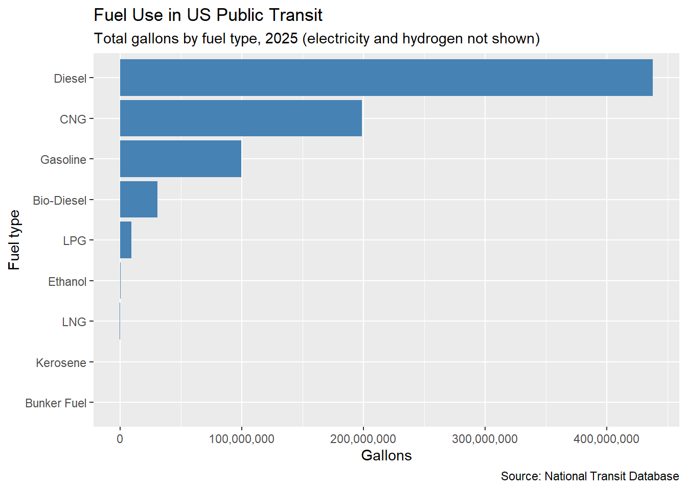
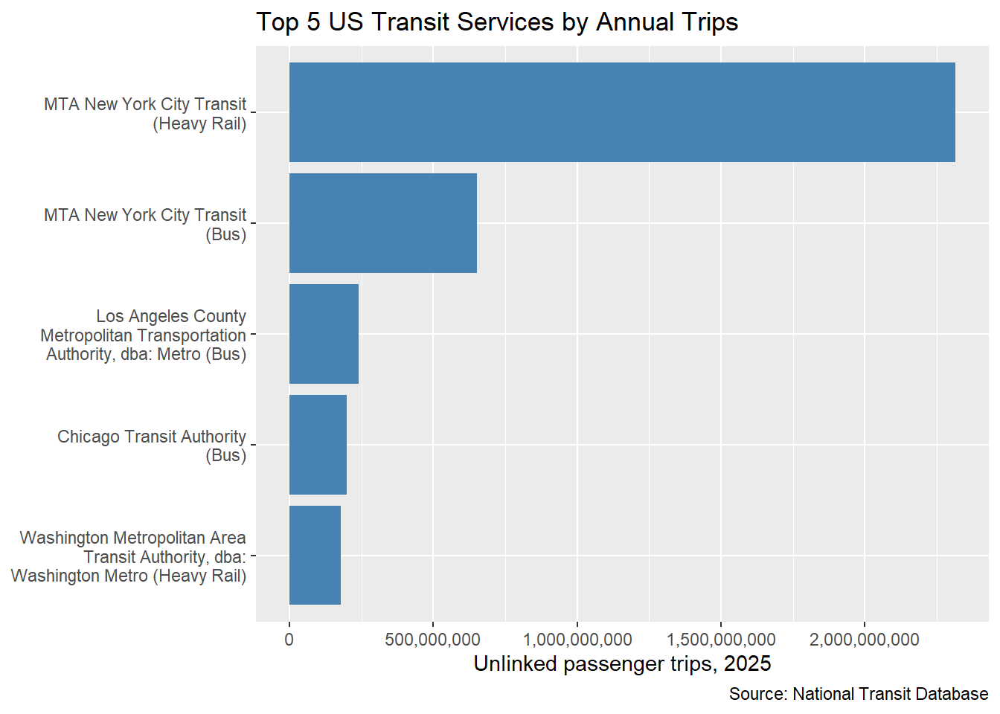

load_ntd_energy <-function(){library(readxl)library(httr2)library(tidyverse)library(fs) DATA_DIR <- fs::path("data", "mp02") fs::dir_create(DATA_DIR, recurse=TRUE) NTD_ENERGY_FILE <- fs::path(DATA_DIR, "2025_ntd_energy.xlsx")if(!fs::file_exists(NTD_ENERGY_FILE)){library(httr2)request("https://www.transit.dot.gov/") |>req_url_path("sites","fta.dot.gov","files","2026-09","2025 Energy Consumption_260806.xlsx") |>req_headers(`User-Agent`="Mozilla/5.0 (Macintosh; Intel Mac OS X 10.15; rv:149.0) Gecko/20100101 Firefox/149.0") |>req_perform(NTD_ENERGY_FILE) }if(file.info(NTD_ENERGY_FILE)$size <1e4){cat("I was unable to download the NTD Energy File. Please try again.\n")stop("Download failed. Please delete the corrupted file by running `unlink('data/mp02/2025_ntd_energy.xlsx')` and try again.") } to_numeric_fill_0 <-function(x){ x <-if_else(x =="-", NA, x)replace_na(as.numeric(x), 0) }read_excel(NTD_ENERGY_FILE) |>select(-c(`Reporter Type`, `Reporting Module`, `Gallons of Other Fuel`, `Other Fuel Description`)) |>mutate(across(-c(`Agency Name`, `Mode`,`TOS`), to_numeric_fill_0)) |>group_by(`NTD ID`, `Mode`, `Agency Name`) |>summarize(across(where(is.numeric), sum), .groups ="keep") |>mutate(ENERGY =sum(c_across(c(where(is.numeric))))) |>filter(ENERGY >0) |>select(-ENERGY) |>ungroup()}NTD_ENERGY <-load_ntd_energy()
Transit Service Provided (NTD)
Show All Code
load_ntd_service <-function(){library(httr2)library(tidyverse)library(fs) DATA_DIR <- fs::path("data", "mp02") fs::dir_create(DATA_DIR, recurse=TRUE) NTD_SERVICE_FILE <- fs::path(DATA_DIR, "2025_ntd_service.csv")if(!fs::file_exists(NTD_SERVICE_FILE)){library(httr2)request("https://data.transportation.gov/resource/4fir-qbim.csv") |>req_url_query(`$query`=paste("SELECT `_5_digit_ntd_id` AS `NTD_ID`", "`max_agency` AS `AGENCY`","`max_reporter_type` AS `reporter_type`","`max_organization_type` AS `organization_type`","`max_city` AS `city`","`max_state` AS `state`","`mode`","`type_of_service`","`max_primary_uza_code` as `uza_code`","`max_primary_uza_name` as `uza_name`","`max_primary_uza_area_sq_miles` as `uza_sq_miles`","`max_primary_uza_population` as `uza_population`","`max_service_area_sq_miles` as `service_area_sq_miles`","`max_service_area_population` as `service_area_population`","`questionable_record` as `flagged_likely_inaccurate`","`sum_unlinked_passenger_trips_upt` as `total_upt`","`sum_passenger_miles` WHERE caseless_one_of(`report_year`, '2025') limit 50000", sep=",")) |>req_headers(`User-Agent`="Mozilla/5.0 (Macintosh; Intel Mac OS X 10.15; rv:149.0) Gecko/20100101 Firefox/149.0") |>req_perform(NTD_SERVICE_FILE) }if(file.info(NTD_SERVICE_FILE)$size <1e4){cat("I was unable to download the NTD Service File. Please try again.\n")stop("Download failed. Please delete the corrupted file by running `unlink('data/mp02/2025_ntd_service.xlsx')` and try again.") }read_csv(NTD_SERVICE_FILE) |>mutate(flagged_likely_inaccurate =!is.na(flagged_likely_inaccurate))}NTD_SERVICE <-load_ntd_service()
library(gt)# Q2: the 5 states with the highest CO2 per MWhdirtiest_states <- EIA_SEP_REPORT |>arrange(desc(CO2_MWh)) |>head(5) |>select(state, primary_source, CO2_MWh)# Q3: average CO2 per MWh, weighted by how much electricity each state makestotal_co2 <-sum(EIA_SEP_REPORT$CO2_MWh * EIA_SEP_REPORT$generation_MWh)total_generation <-sum(EIA_SEP_REPORT$generation_MWh)us_avg_co2_mwh <- total_co2 / total_generation# Q5: how many times cleaner is New York than Texas?texas <- EIA_SEP_REPORT |>filter(abbreviation =="TX")new_york <- EIA_SEP_REPORT |>filter(abbreviation =="NY")tx_vs_ny <- texas$CO2_MWh / new_york$CO2_MWh
These 5 states are the “dirtiest” West Virginia, Kentucky, Wyoming, Missouri, and Hawaii. Which means they produce the most CO2 per megawatt-hour.
Show All Code
dirtiest_states |>gt() |>cols_label(state ="State", primary_source ="Primary Source",CO2_MWh ="CO2 (lbs per MWh)") |>fmt_number(CO2_MWh, decimals =0) |>tab_source_note("Source: U.S. Energy Information Administration state profiles")
State
Primary Source
CO2 (lbs per MWh)
West Virginia
Coal
1,912
Kentucky
Coal
1,744
Wyoming
Coal
1,724
Missouri
Coal
1,456
Hawaii
Petroleum
1,426
Source: U.S. Energy Information Administration state profiles
On average 785 pounds of CO2 is emitted per megawatt-hour.
New York is about 1.5 cleaner than Texas in terms of CO2 emission per MWh.
Task 3b: NTD Energy Usage
Show All Code
# Q1: the 5 agencies that used the most gallons of fuel, broken down by type# (electricity is in kWh and hydrogen is in kg, so they are not part of "gallons")top_fuel_agencies <- NTD_ENERGY |>group_by(`Agency Name`) |>summarize(diesel =sum(`Gallons of Diesel Fuel`),gasoline =sum(`Gallons of Gasoline`),cng =sum(`Gallons of Compressed Natural Gas`),lpg =sum(`Gallons of Liquified Petroleum Gas`),biodiesel =sum(`Gallons of Bio-Diesel`),other =sum(`Gallons of Bunker Fuel`) +sum(`Gallons of Ethanol`) +sum(`Gallons of Kerosene`) +sum(`Gallons of Liquified Nat Gas`) ) |>mutate(total = diesel + gasoline + cng + lpg + biodiesel + other) |>arrange(desc(total)) |>head(5)
NJ Transit Corporation, NYC MTA, LA County MTA, Northeast Illinois Regional Commuter Railroad, and Massachusetts Bay Transport are the top 5 leading agencies in fuel. 4 of which mainly use diesel, with the exception LA which leads in compressed natural gas.
Source: National Transit Database, 2025 energy consumption
Show All Code
# Q2: total gallons of each fuel type across all US transitfuel_totals <-tibble(fuel =c("Diesel", "Gasoline", "CNG", "LPG", "Bio-Diesel","Bunker Fuel", "Ethanol", "Kerosene", "LNG"),gallons =c(sum(NTD_ENERGY$`Gallons of Diesel Fuel`),sum(NTD_ENERGY$`Gallons of Gasoline`),sum(NTD_ENERGY$`Gallons of Compressed Natural Gas`),sum(NTD_ENERGY$`Gallons of Liquified Petroleum Gas`),sum(NTD_ENERGY$`Gallons of Bio-Diesel`),sum(NTD_ENERGY$`Gallons of Bunker Fuel`),sum(NTD_ENERGY$`Gallons of Ethanol`),sum(NTD_ENERGY$`Gallons of Kerosene`),sum(NTD_ENERGY$`Gallons of Liquified Nat Gas`)))ggplot(fuel_totals, aes(x =reorder(fuel, gallons), y = gallons)) +geom_col(fill ="steelblue") +coord_flip() +scale_y_continuous(labels = scales::comma) +labs(title ="Fuel Use in US Public Transit",subtitle ="Total gallons by fuel type, 2025 (electricity and hydrogen not shown)",x ="Fuel type", y ="Gallons",caption ="Source: National Transit Database")

The chart displays the amount of gas used across the US by the gallon. With Diesel leading more than everything else combined.
Task 3c: NTD Service
Show All Code
# Q1 (graph): the 5 transit services with the most unlinked passenger trips (UPT)# A "service" here is one agency running one mode (for example, buses)top_upt <- NTD_SERVICE |>group_by(AGENCY, mode) |>summarize(upt =sum(total_upt, na.rm =TRUE), .groups ="drop") |>mutate(service =paste0(AGENCY, " (", mode, ")")) |>arrange(desc(upt)) |>head(5)ggplot(top_upt, aes(x =reorder(service, upt), y = upt)) +geom_col(fill ="steelblue") +coord_flip() +scale_x_discrete(labels = scales::label_wrap(30)) +scale_y_continuous(labels = scales::comma) +labs(title ="Top 5 US Transit Services by Annual Trips",x =NULL, y ="Unlinked passenger trips, 2025",caption ="Source: National Transit Database")

The graph shows which transit system across the US serves the most trips per year. With the top 2 being comprised of NYC, and the MTA heavy rail having more anuall trips than the rest of the country along with NYC buses.
Show All Code
# Q5 (inline): which states do not appear in the service data?missing_states <- state.name[!(state.abb %in% NTD_SERVICE$state)]
There are 0 states missing from the data.
Show All Code
# Q2 (inline): average trip length on MTA New York City Transit# average trip length = total passenger miles / total number of tripsmta <- NTD_SERVICE |>filter(AGENCY =="MTA New York City Transit")mta_miles <-sum(mta$sum_passenger_miles, na.rm =TRUE)mta_trips <-sum(mta$total_upt, na.rm =TRUE)mta_avg_trip_miles <- mta_miles / mta_trips
The average length of a trip on the NYC MTA is 3 miles.
Task 5: Calculate Emissions
Show All Code
service_by_mode <- NTD_SERVICE |>group_by(NTD_ID, mode) |>summarize(state =first(state), # the agency's statetotal_upt =sum(total_upt, na.rm =TRUE), # tripspassenger_miles =sum(sum_passenger_miles, na.rm =TRUE),.groups ="drop" ) |>mutate(NTD_ID =as.numeric(NTD_ID)) # text -> number, to match the energy tableemissions_data <- NTD_ENERGY |>left_join(service_by_mode,join_by(`NTD ID`== NTD_ID, Mode == mode)) |>left_join(select(EIA_SEP_REPORT, abbreviation, CO2_MWh),join_by(state == abbreviation)) |>mutate(used_us_avg =is.na(CO2_MWh), CO2_MWh =coalesce(CO2_MWh, us_avg_co2_mwh) )co2_diesel <-22.46co2_gasoline <-19.36co2_kerosene <-21.78co2_lpg <-12.68co2_bunker <-24.78co2_cng <-117*0.114co2_lng <-117*0.0747emissions_data <- emissions_data |>mutate(electricity_mwh = (`Kilowatt hours of Electric Battery`+`Kilowatt hours of Electric Propulsion`) /1000,total_co2_lbs =`Gallons of Diesel Fuel`* co2_diesel +`Gallons of Bio-Diesel`* co2_diesel +`Gallons of Gasoline`* co2_gasoline +`Gallons of Kerosene`* co2_kerosene +`Gallons of Liquified Petroleum Gas`* co2_lpg +`Gallons of Bunker Fuel`* co2_bunker +`Gallons of Compressed Natural Gas`* co2_cng +`Gallons of Liquified Nat Gas`* co2_lng + electricity_mwh * CO2_MWh,total_co2_tons = total_co2_lbs /2204.62# pounds -> metric tons )
I treated bio-diesel the same as regular diesel by applying the same emission factor of 22.46 pounds of CO2 per gallon. I did this because the calculation did not use a separate emission factor for bio-diesel. This means bio-diesel emissions are included in the total rather than being excluded or treated as carbon-neutral.
Based on emissions per passenger mile, the most efficient agencies were: - Large: Tri-County Metropolitan Transportation District of Oregon, with 0.0983 lbs of CO2 per passenger mile. - Medium: Snohomish County Public Transportation Benefit Area Corporation, with 0.147 lbs of CO2 per passenger mile. - Small: City of Seattle, with 0.0639 lbs of CO2 per passenger mile.
I calculated this award by comparing each agency’s total CO2 emissions per passenger trip. I selected the agency with the lowest emissions in each size category (small, medium, and large). I also compared each winner to the median emissions of agencies in its size group to determine how many times lower its emissions were than the typical agency.
Show All Code
greenest_table |>gt() |>cols_label(size ="Size Group", `Agency Name`="Winner",lbs_per_trip ="Winner (lbs CO2 per trip)",median_lbs_per_trip ="Median Agency (lbs CO2 per trip)",times_below_median ="Times Below Median") |>fmt_number(c(lbs_per_trip, median_lbs_per_trip), decimals =2) |>fmt_number(times_below_median, decimals =1) |>tab_source_note("Source: National Transit Database; U.S. Energy Information Administration")
Size Group
Winner
Winner (lbs CO2 per trip)
Median Agency (lbs CO2 per trip)
Times Below Median
Large
Tri-County Metropolitan Transportation District of Oregon
0.40
2.71
6.7
Medium
Anaheim Transportation Network
0.20
4.17
21.0
Small
City of Seattle
0.06
7.36
127.9
Source: National Transit Database; U.S. Energy Information Administration
I chose this award to identify large transit agencies with the highest CO2 emissions per passenger mile. I filtered the data to include only large agencies and ranked them from highest to lowest emissions per passenger mile. Since it accounts for both emissions and the distance passengers travel, it’s useful for identifying systems that produce relatively high emissions compared to their passenger usage.
Show All Code
dirtiest |>gt() |>cols_label(`Agency Name`="Agency",lbs_per_mile ="lbs CO2 per Passenger Mile",large_median ="Median Large Agency (lbs CO2 per Mile)",lbs_per_trip ="lbs CO2 per Trip") |>fmt_number(c(lbs_per_mile, large_median, lbs_per_trip), decimals =2) |>tab_source_note("Source: National Transit Database; U.S. Energy Information Administration")
Agency
lbs CO2 per Passenger Mile
Median Large Agency (lbs CO2 per Mile)
lbs CO2 per Trip
Pittsburgh Regional Transit
0.99
0.57
4.31
Dallas Area Rapid Transit
0.87
0.57
5.01
Maryland Transit Administration
0.81
0.57
4.94
Source: National Transit Database; U.S. Energy Information Administration